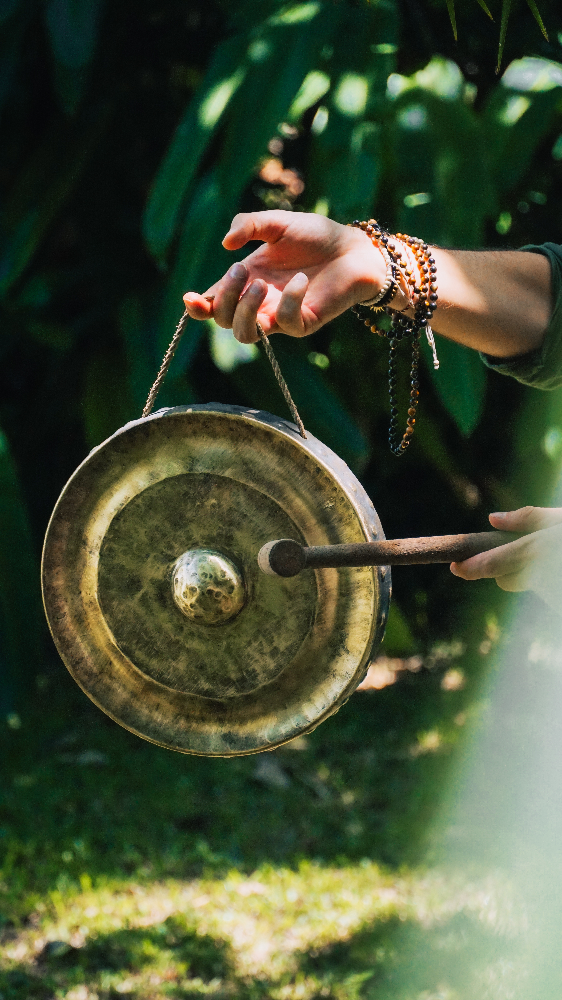
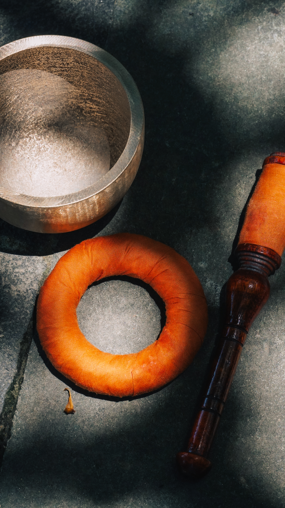

About
The Imperial City, Hue, the city Pure calls home
The people behind Pure have been showing up for their community in Hue for over a decade, quietly, without an organisation name, and without asking for anything in return. They visited families, connected people to resources, and funded small acts of support directly.
This year, they made it official. Not to change what they do, but to open it up so more people could participate and more resources could reach the families who need them. Pure Community Support is legally registered in Vietnam as a commercial website with two physical offices: one in Hue, one in Da Nang.
It is not a charity. It does not accept public donations under any circumstances. It earns its community funding entirely through the sale of traditional Hue handicrafts, objects made by local artisans with real skills and real histories.
"The work doesn't start when someone donates. It starts when someone chooses to buy something made in Hue, and understands what that means."
Hue is the former imperial capital of Vietnam, a UNESCO World Heritage city, and one of the country's most distinctive centers of traditional craft, culinary culture, and architectural heritage.
It is also a city that bears some of Vietnam's most severe seasonal hardship. Central Vietnam faces intense annual typhoon seasons, and Hue has repeatedly been hit by flooding that pushes vulnerable families into crisis. These aren't abstract risks for the families Pure works with, they are recurring realities.
Pure focuses on Hue because its founders are rooted here, and because a decade of work has given them a network, a knowledge of local families, and relationships with schools, hospitals, and community authorities that cannot be replicated from a distance. Geographic focus may expand as the initiative grows.

Pure does not ask for money. It earns it. Every product sold is a handcrafted object made in Hue by local artisans. Every purchase generates a direct, auditable contribution to the community work.
After operating costs, 50% of net profit goes to community support. The other 50% is reinvested into product development, sourcing better materials, supporting more artisans, and building a catalog that can sustain the mission long-term.
Funds are held in a single bank account opened exclusively for this purpose. All disbursements are tracked and published monthly or quarterly in the blog. A formal annual impact report is planned. Every family supported gives explicit written consent before appearing on this site.

Direct assistance, food, essentials, health support. The founding thread of this work, ongoing since before Pure became official.
Preserving Hue's craft traditions, gong forging, silk embroidery, hand-weaving. Keeping skills alive that define this city.
Connecting young people in Hue to leadership opportunities and traditional craft through structured programs and real mentorship.
Rapid response for families hit by typhoons and floods, a recurring need in central Vietnam that the team has addressed for over a decade.
Four programs run continuously with no funding targets and no end dates. Three have been operating since before Pure became an official initiative.
Regular delivery of food and essential goods to disadvantaged families and individuals in Hue who need ongoing practical support.
RunningArt therapy and creative workshops for people in vulnerable situations, using traditional craft as a medium for wellbeing and human connection.
RunningA structured program for young people in Hue focused on community engagement, civic responsibility, and skills that go beyond the classroom.
RunningHands-on instruction in traditional Hue craft techniques, connecting young people directly with artisan practitioners and the knowledge they carry.
PlannedWhen people offer money, it is always declined. Revenue comes only from product sales. This is non-negotiable and applies in all circumstances.
Explicit written consent is required before any beneficiary case or photograph appears on this site. Cases without consent are never published.
Every family Pure supports receives a follow-up visit three months after support is given, not to document, but to understand what happened next.
Monthly and quarterly blog posts show how much was earned and exactly where the money went. A formal annual impact report is planned.
Campaigns run indefinitely with no funding targets. Support is not conditional on hitting a number, it continues as long as the need exists.
This initiative is about community and craft. No founder names or photos are prominently featured. The work speaks for itself.
The makers behind Pure's products practice craft traditions that define Hue, from gong and bell forging to silk embroidery and hand-weaving. Their work is not a revival. These are active skills, passed down through families who have kept them alive through disruption and change. Each artisan is credited in the product catalog and featured in the blog.
Beyond the artisans, a broader group of volunteers and collaborators makes Pure possible, people who source, coordinate, photograph, translate, and connect. A dedicated recognition section on this site lists every artisan and collaborator who has contributed to the work. If you are interested in contributing, get in touch.
Support the artisans who made it and the families it helps. No donation needed, just a good purchase.